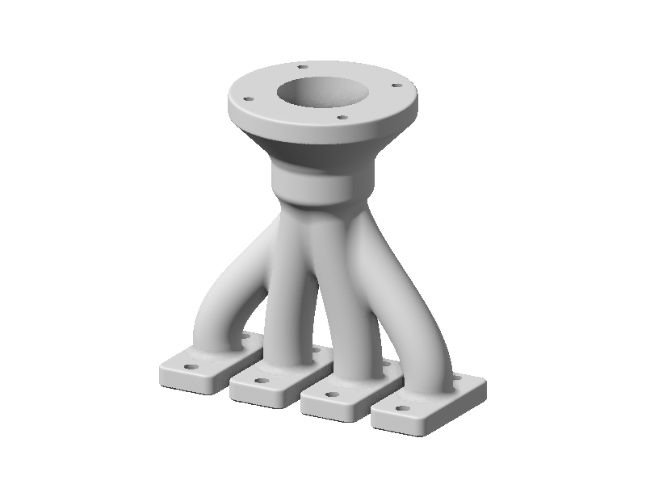
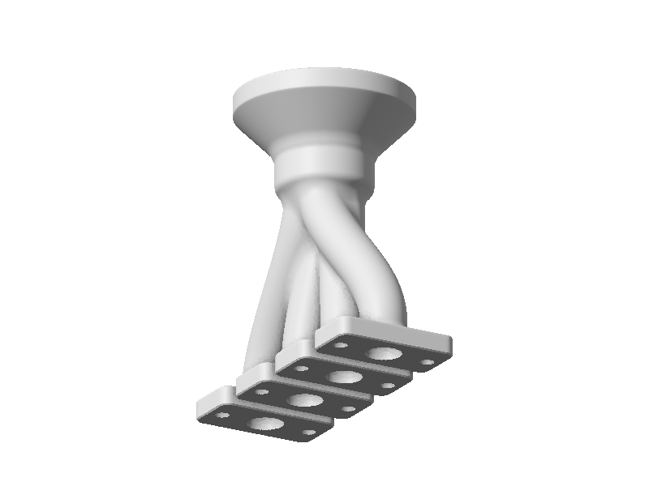

intake-manifold
Drafted with AI, not yet reviewed
by keycap
Intake manifold: four runners from an inline row of ports, merging into one collector with a throttle body’s flange on top; hollow, with thin walls.
Each runner is a 3D Bézier curve made a tube: points::bezier walks the
curve and capsule draws a round rod through the points. The runners
and the collector are blended together and then hollowed in one go,
so the bores merge as smoothly as the outside does. The flanges are
added after the hollowing, so that they stay solid.
Prints standing on the port flanges, without supports: the runners lean at most 43 degrees from vertical, the collector starts with a 45-degree cone, and the outlet flange sits on a 45-degree flare.
Unverified: the print without supports.


Files
Source
// SPDX-License-Identifier: 0BSD // // Intake manifold: four runners from an inline row of ports, merging into // one collector with a throttle body's flange on top; hollow, with thin // walls. // // Each runner is a 3D Bézier curve made a tube: `points::bezier` walks the // curve and `capsule` draws a round rod through the points. The runners // and the collector are blended together and then hollowed in one go, // so the bores merge as smoothly as the outside does. The flanges are // added after the hollowing, so that they stay solid. // // Prints standing on the port flanges, without supports: the runners lean // at most 43 degrees from vertical, the collector starts with a 45-degree // cone, and the outlet flange sits on a 45-degree flare. // // Unverified: the print without supports. // view: camera -60 20 // view: camera 150 -20 // view: sdf, slice y import "keycap/points" as points; // --- Parameters --- const PORTS = 4; const PITCH = 30.0; // between the ports' centres const RUNNER = 18.0; // runners' outer diameter const COLLECTOR = 38.0; // collector's outer diameter const WALL = 2.0; const FILLET = 3.0; // where the runners, the collector and the flanges meet const MERGE = 80.0; // height where the runners end, inside the collector const TOP = 110.0; // height of the outlet flange's underside // Port flanges: one per runner, two M5 bolts each const FLANGE = [24.0, 50.0]; const FLANGE_T = 8.0; const BOLT = "M5"; const BOLT_SPREAD = 38.0; // between a port's two bolts // Outlet flange: four tapped M5 holes on a square const OUTLET_D = 70.0; const OUTLET_T = 8.0; const OUTLET_BOLTS = 40.0; // the square's side // Each runner's curve is drawn with this many straight pieces. const STEPS = 64; let r = RUNNER / 2; let rc = COLLECTOR / 2; // --- Runners --- // The ports' centres along X. fn port_x(i) { (i - (global::PORTS - 1) / 2.0) * global::PITCH } // Where runner `i` ends: the ends packed in a square round the collector's // axis, as far out as keeps a fillet's width clear of its wall: a blend // bulges where two surfaces run side by side within it. The outer // runners take the back corners and the inner ones the front, so no two // runners cross. fn runner_end(i) { let a = (global::COLLECTOR / 2 - global::FILLET - global::RUNNER / 2 - 0.5) / sqrt(2.0); let side = if i < global::PORTS / 2 { -a } else { a }; let outer = i == 0 || i == global::PORTS - 1; [side, if outer { a } else { -a }, global::MERGE] } // A runner's path: straight up through its flange, so that the bore cut // through the flange meets it square, then a cubic Bézier curve over to // its place in the collector, arriving straight up too. The control // points a third of the way up and down spread the lean over the whole // rise, which keeps it under 45 degrees. fn runner_path(i) { let x = port_x(i); let start = global::FLANGE_T + global::FILLET + 2; let end = runner_end(i); let reach = (global::MERGE - start) / 3; let curve = [ [x, 0.0, start], [x, 0.0, start + reach], [end[0], end[1], end[2] - reach], end, ]; [[x, 0.0, 0.0]] + points::bezier(curve, global::STEPS) } // The capsules' round ends reach below the bed and into the collector; // the bed cuts the first and the collector covers the others. let runners = []; for i in 0..PORTS { runners.push(capsule(runner_path(i), r)); } // --- Collector --- // A 45-degree cone up from within the runners' cluster to the collector's // width, then straight up to the outlet. let tip = runner_end(0)[1]; let collector = revolve([ [0, MERGE - (rc - tip)], [tip, MERGE - (rc - tip)], [rc, MERGE], [rc, TOP], [0, TOP], ], #{round: 4}); // --- Hollow body --- // The bores are where the joined field is below -WALL, so the walls are as // even as the field is a distance. smooth_union's field is a bound: the // walls measure 2.0 to 3.7 mm, the most in the crotches between runners. // union_round's is steeper than a distance where the runners meet the // cone, and its walls thin to 1.4 mm there. let body = smooth_union(runners + [collector], FILLET, #{kind: "circular"}).shell(WALL); // --- Flanges --- // A port's flange: a plate with its bottom edge chamfered against // elephant's foot, a bolt either side of the bore. A hole is open above // without end, so it is cut off just over the plate, short of the runners // leaning over it. fn port_flange(x) { let plate = rect(global::FLANGE, #{round: 4}) .extrude([0, global::FLANGE_T], #{round: [0, 1], chamfer: [0.6, 0]}); let bolts = screw_hole(global::BOLT, global::FLANGE_T + 1, #{head: "none"}) .move([0, 0, global::FLANGE_T]) .linear_array([0, global::BOLT_SPREAD], 2, #{center: true}) .intersection(z - global::FLANGE_T - 1); plate.difference(bolts).move([x, 0, 0]) } let ports = []; for i in 0..PORTS { ports.push(port_flange(port_x(i))); } // The outlet flange on a 45-degree flare, so that it prints without // support; its holes are for a tap, or for heat-set inserts. let outlet_r = OUTLET_D / 2; let flare = TOP - (outlet_r - rc); let tapped = screw_hole(BOLT, 12, #{head: "none", fit: "tap"}) .move([0, 0, TOP + OUTLET_T]) .grid_array([OUTLET_BOLTS, OUTLET_BOLTS], [2, 2], #{center: true}); let outlet = revolve([ [0, flare], [rc, flare], [outlet_r, TOP], [outlet_r, TOP + OUTLET_T], [0, TOP + OUTLET_T], ], #{round: 1}) .difference(tapped); // --- Bores --- // The solid flanges, and the fillets that join them to the body, cover the // bores' ends; these cut them open again, as wide as the hollow body's. let bores = [cylinder(rc - WALL, [flare - FILLET - 1, TOP + OUTLET_T + 1])]; for i in 0..PORTS { bores.push(cylinder(r - WALL, [-1, FLANGE_T + FILLET + 1]).move([port_x(i), 0, 0])); } // --- Manifold --- let manifold = union_round(body, ports + [outlet], FILLET) .difference(bores) .intersection(-z); draw(manifold);